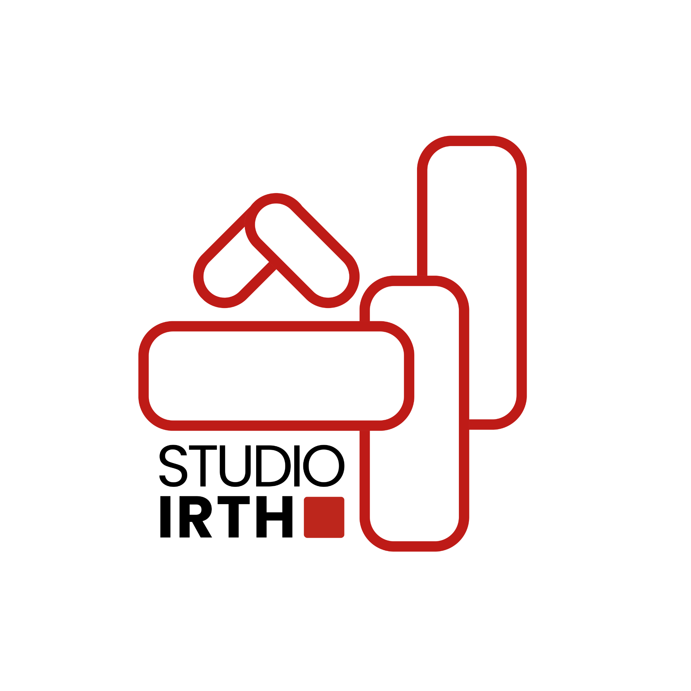
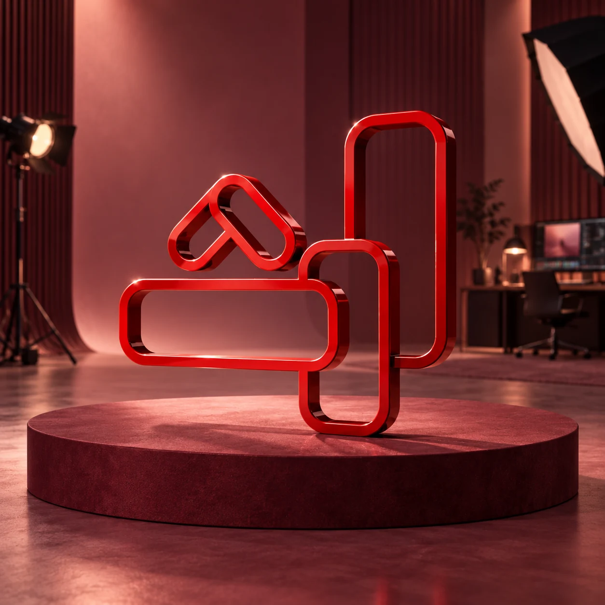

WORK SMARTER
Digital
solutions
Turn scattered tasks and manual processes into clear workflows and practical tools for your team.
- Process & workflow design
- Business apps & internal portals
- Automation & connected systems


We create business systems that simplify work and campaigns that connect with people.
Irth connects the analytical with the imaginative. We ask the right questions, untangle the complexity and make something people can use, understand and feel.
Turn scattered tasks and manual processes into clear workflows and practical tools for your team.
Turn complex ideas into clear messages, distinctive campaigns and content people connect with.
Explore digital products, campaigns and independent work. Each project shows its scope and current stage.
Studio Irth / Business analysis & application development
An operations platform in development for engineering and technical services: connecting client enquiries, quotations, projects, technical reports and finance.
The work starts with the way the team actually operates. Its scope includes technician assignments, report reviews and corrections, equipment records, invoices and employee workflows. The platform is being refined through an active development backlog.
UNICEF / Campaign content & short-form storytelling
Six reels about water in Jordan, bringing a vital public issue into an everyday, social-first format.
A campaign contribution centred on short-form video: making room for an important topic in the way people watch, share and discover stories. Part of Nabil’s communications experience with UNICEF.
UNICEF / Awareness content & toolkit communication
Ten reels created with UNICEF to raise mental health awareness and introduce its mental health toolkit.
The communication task: bring awareness and a practical resource into the same conversation. Short-form content gives the subject an accessible entry point and introduces audiences to the toolkit.
ADHDJO / Campaign collaboration
A month-long Instagram campaign bringing together specialists, parents and people with ADHD to challenge stigma and share different perspectives.
A collaboration with Brainy Nation, connecting professional perspectives with lived experience through ADHDJO.
View the campaign recapOpen a project to explore the work.
UNICEF / Power Platform development
A leave-management application built within Nabil’s UNICEF role. It digitized a recurring administrative workflow and was used for more than three years.
Business system / Design & development
A car-rental tracking and management system that brings operational information into a structured workflow, with everyday usability at its centre.
UNICEF-supported centres / Network & content control
Network and content-control work using Cisco Meraki across UNICEF-supported centres, drawing on approximately eight years of experience with the environment.
Professional experience / Mobile device management
Mobile device management supporting approximately 25,000 tablets for protected e-learning during and after the COVID-19 period. A large-scale digital operations contribution in a humanitarian setting.
Independent project / Website design & prototyping
A website prototype for the ADHDJO community, bringing educational content, resources and a proposed specialist directory into one place. The directory remains a prototype feature.
Independent product / Concept & prototyping
An exploration of a personal workspace for tasks, calendar planning and capturing scattered thoughts. A product idea being shaped around how attention and everyday life actually work.
Campaign & podcast work
Creative work with BluTactical across campaign and podcast collaboration, part of Nabil’s wider communications portfolio.
Founder & content creator
An Arabic-first platform for stories and conversations around ADHD and neurodiversity. Lived experience meets storytelling to make complex topics more relatable to audiences in the region.
Explore ADHDJOZaatari / Youth podcast & studio support
Support for youth podcast and studio activity in Zaatari, connecting production tools, creative practice and opportunities for young people to tell their own stories.
Independent work / Author
A published, printed book by Nabil. A different expression of the same creative instinct: turning a personal voice into something people can hold, read and connect with.
Creative concept / Behaviour-change communication
A campaign concept using a square-headed character to make everyday behaviours visible and start a conversation. A memorable character carrying a message without becoming a lecture.
Campaign promotion & bilingual video copy
Awareness content with Jordan’s Anti-Narcotics Department, including a promotional reel for its public creative competition and Arabic–English video copy and subtitles.
Creative communications / Collaboration
A collaboration with the 4×4 Club, part of Nabil’s creative communications work.
No projects match these filters.
This portfolio brings together Studio Irth projects, independent work, collaborations and professional experience. UNICEF work is credited in its original context. Prototypes and concepts are labelled; project-cover graphics are editorial interpretations.
I’m Nabil Aref—founder of Studio Irth, a technology specialist, business analyst and storyteller based in Amman. I’m interested in the space between how things work and how they make people feel.
My work moves from humanitarian technology and everyday business systems to campaigns, books and conversations on screen. I founded ADHDJO to make space for honest Arabic conversations about ADHD and neurodiversity. Irth brings these worlds together: practical thinking, creative expression and a reason to care.
BUILDER. STORYTELLER. CONNECTOR.
Meet Nabil on InstagramI turn messy processes into something people can use.
I find the human angle inside a complicated idea.
I help ideas travel from the room to the audience.
Television features, workshops and long-form conversations.
A BBC Xtra TV feature following Nabil’s experience and his journey into awareness content.
Watch the conversationNabil’s participation in a workshop at Ahli Bank.
Watch the conversationAn extended Arabic conversation about lived experience, diagnosis and learning to understand yourself.
Watch the conversationSpeaking from lived experience. These appearances form part of Nabil’s personal media work.
We start with your goal, the people involved and the problem to solve.
We agree on the message or workflow, the scope and what success looks like.
We develop the system, campaign or content, with room for your feedback.
We test, review and improve the work before putting it into use.
We map what happens today, find the friction and shape a clearer way to work. That might be a business app, an automated workflow or a simpler process.
Tell us what you want to build, improve or communicate. Start with an email to Nabil.
naref@studioirth.com